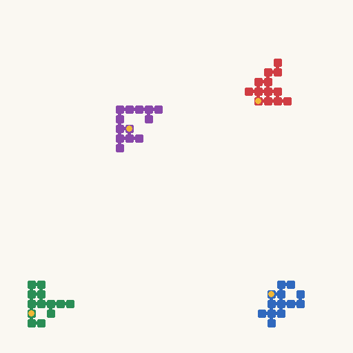

A small local detail. A long route. Several separated pieces. BlindLoop
can ask a coding agent to generate questions with different patterns of
image support.
Image support is measured by masking regions and checking
whether the inverse program’s answer changes or the program raises an
error. It describes program sensitivity, not human attention.
The world matched its requested category. 100% category agreement across 6 measured scenes.
Examples are selected from replay-verified worlds with complete
measurements, stable categories, and matching requests. The label
summarizes measurements across scenes; the displayed instance is a
recorded illustration of that world and need not have that individual
scene label.
How support is measured
Change the pixels. Observe the solving program.
The category grid above has 3×3 cells. The measurement below uses a
separate 8×8 probe grid to test regions of each image.
Try a mask position

Select a square to illustrate the region replaced.
Display-only illustration with a neutral fill. This page does not run
the inverse program or claim an outcome for the selected position.
01
Record the original answer
Run the inverse program on the unmodified image.
02
Mask one region at a time
Replace pixels with the median color of the image’s outer
three-pixel border. Each probe extends one quarter-cell beyond its
nominal boundary on every side.
03
Check the response
A position is affected if the answer changes or the inverse raises
an error. An error on a masked image is evidence of sensitivity;
an error on an unmodified verification image still fails
verification.
04
Summarize the geometry
Measure the extent and shape of affected positions. Repeat across
four to six distinct scenes, then aggregate their geometry to
assign a world-level category.
The fixed category rules
Scale
Focal: normalized span below 0.30. Regional:
0.30 to below 0.65. Distributed: 0.65 or
above.
Shape
Multipart: at least two four-connected
components. Pathlike: otherwise, elongation ≥
2.75 or bounding-box fill ≤ 0.55 with nonzero span. Compact:
all remaining cases.
Four-connected positions share a horizontal or vertical edge. Elongation
describes how stretched the affected region is; fill measures how much
of its bounding box is occupied. These rules operate on measured probe
geometry, not on the objects’ semantic meaning.
Complete measurement: at least two thirds of analyzed
scenes expose an affected region. Stable category: at
least two thirds of all analyzed scenes receive the aggregate category.
The world category uses median geometry across scenes; completeness and
stability are separate conditions.
From measurement to generation
Request a category. Let the agent design the question.
The controller chooses a target category before an episode. The coding
agent receives the request alongside its reasoning instructions,
implementation demonstrations, and campaign history.
REQUEST
Regional + pathlike
An example instruction about the desired support pattern.
→
GENERATE
Write a new world
The agent creates the question, scene generator, and both answer
programs.
→
MEASURE
Check the category
A separate masking analysis assigns the observed category.
The requested category is guidance, not an acceptance gate.
A mismatch does not reject a world that otherwise passes acceptance. A
rejected submission can still return a support measurement.
How the next request is chosen
The controller keeps at most three worlds per category. Its fixed
request rule favors categories with fewer stored worlds, more past
target matches or fewer observations, and categories not requested in
the preceding episode. It penalizes repeated misses.
The category record is smaller than the full accepted collection. Its
retention rules also compare declared mechanisms and measured behavior,
so category coverage and total accepted worlds describe different
populations.
Observed results
Requests often match. The collection covers more categories.
95.5%835 of 874 replay-verified worlds with complete measurements matched
their request
7.09 vs. 5.20mean categories represented per campaign with and without
steering
6.38 vs. 4.26mean categories in equal-count samples of ten worlds, across 35
campaign pairs
Different populations answer different questions
Population
Total
Measured
Matches
Match rate
All episodes
1,179
981
918
93.6%
Accepted worlds
903
902
860
95.3%
Replay-verified worlds
875
874
835
95.5%
Match rates use the measured population as their denominator. One
replay-verified world had an incomplete measurement. Steered campaigns
produced 3.35 accepted worlds per episode-hour, compared with 4.95 without
steering.
These campaigns were run separately. The findings support descriptive
differences in coverage and throughput, not a causal claim that steering
alone produced them. Masking sensitivity also does not establish which
regions a person needs to answer the question.